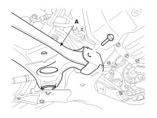
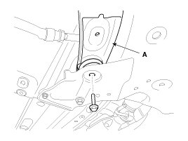

Control Arm: Service and Repair
Replacement
1. Remove the front wheel & tire.
Tightening torque :
88.3 - 107.9N.m(9.0 - 11.0kgf.m, 65.1 - 79.6lb-ft)

CAUTION:
Be careful not to damage to the hub bolts when removing the front wheel & tire.
2. Loosen the nut and remove the lower arm (A).
Tightening torque :
78.5 - 88.3N.m(8.0 - 9.0kgf.m, 57.9 - 65.1lb-ft)

3. Loosen the bolts & nuts and then remove the lower arm (A) with the sub frame.
Tightening torque :
Front
98.1 - 117.7N.m(10.0 - 12.0kgf.m, 72.3 - 86.8lb-ft)
Rear
156.9 - 176.5N.m(16.0 - 18.0kgf.m, 115.7 - 130.2lb-ft)


4. Installation is the reverse of removal.
Inspection
1. Check the bushing for wear and deterioration.
2. Check the lower arm for deformation.
3. Check the all bolts and nuts.